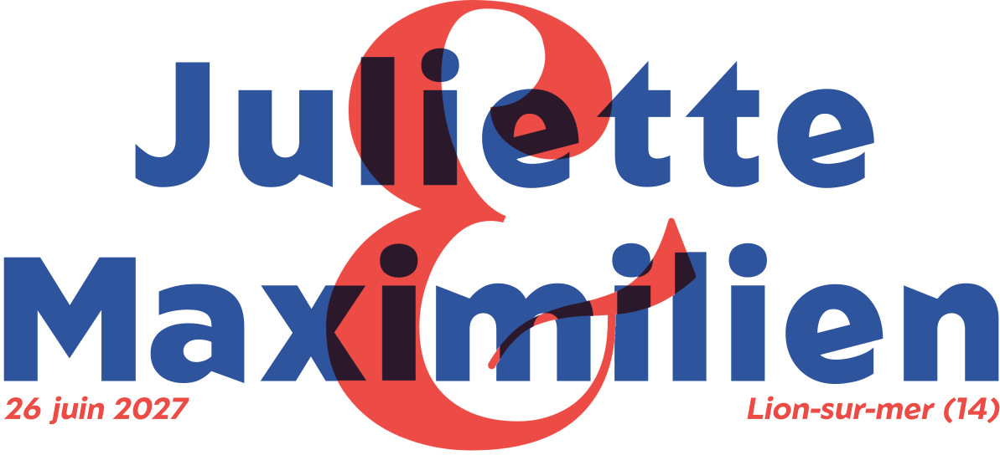

La fête de mariage
la vraie fête !
Samedi 26 juin 2027
À partir de 14h (à préciser)
Salle du Trianon
Lion-sur-mer

Samedi 26 juin 2027
À partir de 14h (à préciser)
Salle du Trianon
Lion-sur-mer
Samedi 19 juin 2027
à 15h30 Hôtel de Ville de Nantes
A 17h, au café des Marchandises
Pour nous aider à organiser la cérémonie civile puis le mariage, un gentil questionnaire est à remplir !
Remplir le questionnaireSuggestions de lieux (hôtels, locations, bungalows, campings…)
Consulter la carteRien ! On est déjà tellement content de vous voir :)
Une question ? N'hésitez pas à nous envoyer un message :
contact@example.com